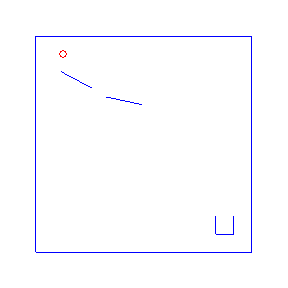
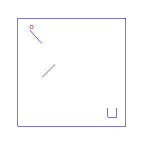
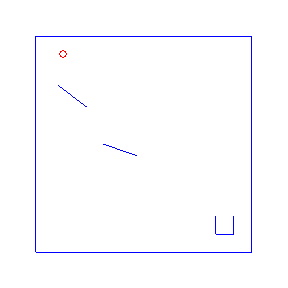
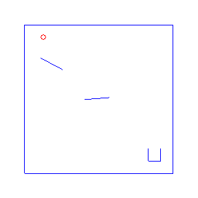
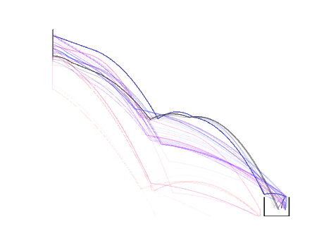

One advantage of probabilistic programming in a general purpose language is that we can import existing libraries as part of our models. Here we follow an example from the Anglican team with a simple 2d physics problem based on the Chipmunk library. For the Anglican example see the Machine Learning Summer School or the KAIST lecture course. For more advanced physics simulations in probabilistic programming, see PPX.
Thanks also to Alexander Bai for initially adapting the Haskell implementation in Sam’s OPLSS course to LazyPPL.
The source for this Literate Haskell file is currently here.
{-# LANGUAGE FlexibleInstances #-}
{-# LANGUAGE FlexibleContexts #-}
{-# LANGUAGE MultiParamTypeClasses #-}
{-# LANGUAGE TemplateHaskell #-}
module Physics where
import Apecs.Physics
import Apecs.Physics.Gloss
import Graphics.Gloss.Export (exportPicturesToGif,GifLooping(LoopingForever))
import Control.Monad (replicateM, when)
import LazyPPL
import LazyPPL.Distributions (uniformbounded, normalPdf)
import Numeric.Log(Log(Exp),ln)
import System.Random (setStdGen, mkStdGen)
import Graphics.Matplotlib hiding (density)
import System.IO.Unsafe (unsafePerformIO)
import Data.List (findIndex)
import Data.Monoid (Product(Product))The general idea is:
There is a ball falling from a fixed position.
There is a cup at a fixed position.
We want to place and orient bumpers so that the ball falls in to the cup.
Here are four possible solutions, found by LazyPPL, when there are two bumpers:
 
 
makeWorld "World" [''Physics, ''Camera]initialize bumpers = do
set global ( Camera (V2 0 1) 60
, earthGravity )
-- The bumpers
mapM (\(x,y,theta) -> do
lineBody <- newEntity (StaticBody, Angle (theta), Position (V2 x y))
newEntity (Shape lineBody (hLine 2), Elasticity 0.3)
) bumpers
-- The cup
lineBody <- newEntity (StaticBody, Position (V2 4.5 (-5)))
newEntity (Shape lineBody (hLine 1), Elasticity 0.1)
lineBody <- newEntity (StaticBody, Position (V2 4 (-4.5)))
newEntity (Shape lineBody (vLine 1), Elasticity 0.1)
lineBody <- newEntity (StaticBody, Position (V2 5 (-4.5)))
newEntity (Shape lineBody (vLine 1), Elasticity 0.1)
-- Border
lineBody <- newEntity (StaticBody, Position (V2 0 6))
newEntity (Shape lineBody (hLine 12), Elasticity 0)
lineBody <- newEntity (StaticBody, Position (V2 0 (-6)))
newEntity (Shape lineBody (hLine 12), Elasticity 0)
lineBody <- newEntity (StaticBody, Position (V2 6 0))
newEntity (Shape lineBody (vLine 12), Elasticity 0)
lineBody <- newEntity (StaticBody, Position (V2 (-6) 0))
newEntity (Shape lineBody (vLine 12), Elasticity 0)
-- The ball
ball <- newEntity (DynamicBody, Position (V2 (-4.5) 5))
newEntity (Shape ball (cCircle 0.2), Density 1, Elasticity 0.9)
return ballendCriterion :: (Double,Double) -> Bool
endCriterion (x,y) = y< -5 || (y < -4.5 && x > 4 && x < 5)Make an animated gif from a sequence of pictures using Gloss.
exportGif filename pics = do
putStrLn $ "Plotting GIF to " ++ (show filename) ++ "..."
exportPicturesToGif 2 LoopingForever (288,288) (makeColor 1 1 1 0) filename (\t -> pics !! (floor t)) [0..(fromIntegral $ length pics - 1)]
putStrLn $ "Done."plotCoords :: String -> [[(Double,Double)]] -> Double -> Double -> Double -> IO ()
plotCoords filename xyss ymin ymax alpha =
do putStrLn $ "Plotting " ++ filename ++ "..."
file filename $ mp # "plot.axis('off')" % mp # "colors = plot.cm.gnuplot2(np.linspace(0,1," # (floor ((fromIntegral $ length xyss) * 1.5) :: Integer) # ")) " % foldl (\a i -> a % plot (map fst (xyss !! i)) (map snd (xyss !! i)) @@ [o1 "o-", o2 "color" (lit ("colors[" ++ (show (length xyss - i)) ++ "]")), o2 "linewidth" (1.0 :: Double), o2 "alpha" alpha, o2 "ms" (0 :: Int)]) mp [0..(length xyss -1)] % (plot ([4,4,5,5] :: [Double]) ([-4,-5,-5,-4] :: [Double]) @@ [o1 "o-", o2 "c" "black", o2 "ms" (0 :: Int)] % xlim (-5 :: Int) (5.1 :: Double) % ylim ymin ymax)
putStrLn "Done."
return ()getTrajectory :: [(Double,Double,Double)] -> IO [(Double,Double)]
getTrajectory bumpers =
do w <- initWorld
runWith w $ do
b <- initialize bumpers
xys <- run b 500
return xys
where
-- run produces the trajectory until the endCriterion
-- or until the fuel runs out
-- (in case the ball somehow gets stuck)
run b fuel = do
stepPhysics (1/60)
(Position (V2 x y)) <- get b
if fuel < 0 then return [(x,y)] else
if endCriterion (x,y) then return [(x,y)] else
do
rest <- run b (fuel - 1)
return $ (x,y) : restgetPics :: [(Double,Double,Double)] -> IO [Picture]
getPics bumpers =
do w <- initWorld
runWith w $ do
b <- initialize bumpers
xypics <- mapM (\_ -> do
stepPhysics (1/60)
(Position (V2 x y)) <- get b
pic <- draw
return (x,y,pic)
) [1..1000]
let (Just n) = findIndex (\(x,y,_) -> endCriterion (x,y)) xypics
return $ map (\(_,_,pic) -> pic) $ take (n + 50) xypics
where
draw = do
-- draw the current scene
pic <- foldDrawM drawBody
let cam = Camera (V2 (8) (-8)) 9
return $ cameraTransform cam pic The model:
Pick some bumper positions and angles uniformly
Run the 2d physics
Then observe that the ball lands more-or-less in the cup.
Return a posterior distribution over bumper positions and angles.
model :: Meas [(Double,Double,Double)]
model = do
-- Pick the positions and angles of two bumpers
-- Prior is uninformative, uniformly distributed
bumpers <- sample $ replicateM 2 $ do
x <- uniformbounded (-5) 5
y <- uniformbounded (-5) 5
theta <- uniformbounded 0 pi
return (x,y,theta)
-- Run the physics simulation.
-- The last point is where the ball either leaves the scene
-- or lands in the cup.
let (x,y) = unsafePerformIO $
do { pos <- getTrajectory bumpers ; return $ last pos }
-- Observe the ball is roughly in the cup at the end of the trajectory
score $ normalPdf 4.5 0.2 x
-- Return the bumper positions
return bumpersNote that we do not say that the ball lands exactly in the cup. We
could consider an alternative model by replacing the score with
score $ fromEnum (x > 4 && x < 5). This would
lead to Metropolis-Hastings rejecting the first samples, finding the
first success by brute force, which takes a
lot longer.
runModelMH n trajfile anifile = do
-- Use MH with p=0.15 (0.15 ~= 1/6, and approx six samples needed)
samples <- mh 0.15 model
-- The ball enters the cup when the likelihood is > 0.0876
let p = Product $ Exp $ ln $ 0.0876415
let (Just i) = findIndex (\(_,w) -> w > p) samples
putStrLn $ "[MH] Ball entered the cup after " ++ show i ++ " samples."
-- Output illustrations to files:
when (trajfile /= "") $ do
-- Extract the trajectories of the first n samples
xyss <- mapM getTrajectory (map fst $ take n samples)
-- Plot the trajectories together
plotCoords trajfile xyss (-5) 5 0.01
when (anifile /= "") $ do
-- Plot the last trajectory
pics <- getPics $ fst $ samples !! n
exportGif anifile picsThe four simulations at the top of the page were found by Metropolis-Hastings simulation.
Running the model with the LazyPPL Metropolis-Hastings gives trajectories like this (this is 1000 samples; the very last sample is the bottom-right animation at the top of the page):

The lighter colors (pink) are earlier samples from the Markov chain. We can see the “burn-in” process as the initial samples have low likelihood: they do not land in the cup. The ball begins landing in the pot after around 100 samples (68, 109, 118, 163 in the above animations).
The entire distribution will eventually be explored but only asymptotically. For simplicity we just restarted the simulation to get the four different animations at the top of the page, rather than waiting for one M-H chain to randomly enter many different modes.
runModelBruteForce n trajfile = do
samples <- weightedsamples model
-- The ball enters the cup when the likelihood is > 0.0876
let p = Exp $ ln $ 0.0876415
let (Just i) = findIndex (\(_,w) -> w > p) samples
putStrLn $ "[BF] Ball entered the cup after " ++ show i ++ " samples."
-- Extract the trajectories of the first n samples
xyss <- mapM getTrajectory (map fst $ take n samples)
-- Plot the trajectories together
plotCoords trajfile xyss (-5) 5 0.1Running the model with a brute-force search takes many more samples than Metropolis-Hastings. In the following illustration there were 3343 samples before the ball landed in the cup. Here are 4000 samples:
main :: IO ()
main = do
-- The distribution is multimodal,
-- so let's restart four times for four examples.
-- (Statistically better to use mhirreducible.)
-- We plot the trajectories of the last run.
setStdGen (mkStdGen 1)
runModelMH 1000 "" "images/physics1.gif"
setStdGen (mkStdGen 42)
runModelMH 1000 "" "images/physics2.gif"
setStdGen (mkStdGen 47)
runModelMH 1000 "" "images/physics3.gif"
setStdGen (mkStdGen 57)
runModelMH 1000 "images/physics4.svg" "images/physics4.gif"
-- We also plot what brute force looks like with 4000 trials
runModelBruteForce 4000 "images/physics5.svg"